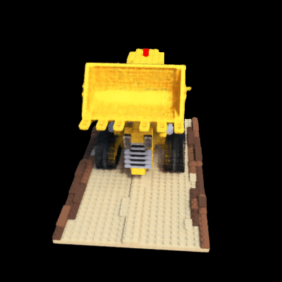

Skills Used
 Python
Python PyTorch
PyTorch C++
C++ ROS2
ROS2

This project explores Neural Radiance Fields (NeRF), a novel deep learning-based method for synthesizing novel views of complex scenes by optimizing a continuous volumetric scene function. The implementation demonstrates how a sparse set of 2D images can be used to learn 3D geometry and appearance using a neural network.